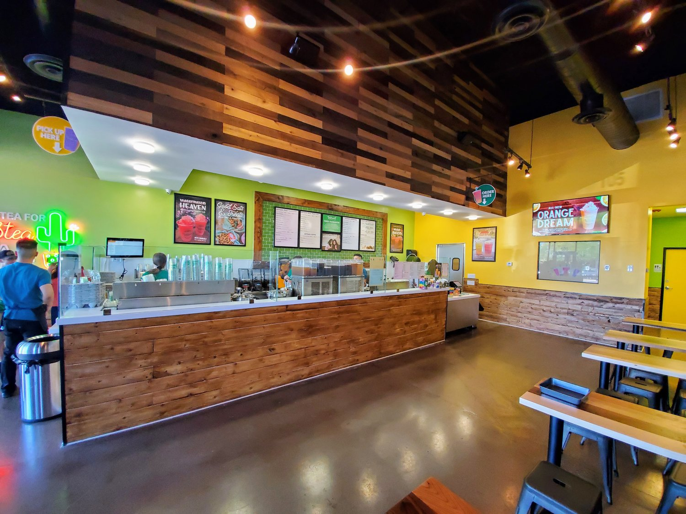
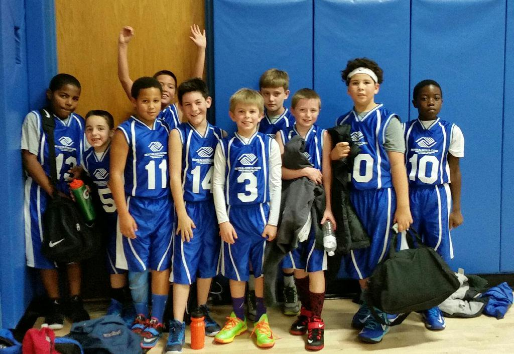
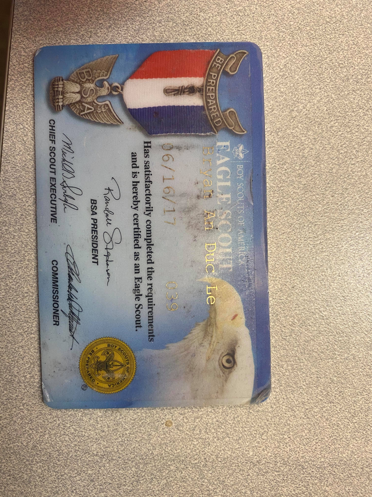

Bryan Le
The sound of their squeaky shoes filled the room as they made their way to center court. They stood with their short arms at their sides, faces flushed with worry. ERRRR! The bell rang, and the ball was thrown into the air. My first playoff game as a basketball coach had just begun.
My friend Quan and I applied to volunteer as Boys and Girls Club basketball coaches our summer of senior year. We had participated in the program as players when we were younger and wanted to do anything we could to give back to the organization and gain a new perspective on the game of basketball. Once the season began, we had high expectations and goals for our team and quickly began planning strategies, practice drills, and our matching coach outfits.
Our season began three months prior to playoffs and consisted of one game and several practices each week. Quan and I would choose a focus topic, such as offense or defense, for each practice and introduce new concepts during exercise drills to be applied to the mini scrimmages we held at the end of each practice. These scrimmages were intense and I learned a lot about my players - their actions in competition, their frustrations in losing, their excitement and jubilance in winning. They looked to us for guidance and knowledge. We watched them recover from their mistakes and quickly learn from these turnovers and missed shots; fixing themselves and helping one another understand these mistakes transformed them into a better team.
I had never been given the tasks to coach anyone before, let alone kids. However, I loved being able to help another person understand a concept or improve in something they love. Watching the development of these players felt so satisfying. The time spent with my players, mentoring and challenging them, was especially worthwhile. It helped me learn to create friendships between all types of people of all ages. Witnessing their progression and growth as a product of my own guidance and help has been one of the most satisfying things.
My name is Bryan Le and I have always believed that helping others is the most fulfilling action an individual can do for oneself and for others. My mother played the greatest role in influencing my interest in the health and medical field. From an early age, she ingrained in me the importance of helping others in any case possible. My first and most impactful memory of the healthcare industry was when I was in the first grade. My mother was suddenly diagnosed with tonsil cancer and had to undergo many forms of surgery and chemotherapy. My visits to the hospital constantly showed me the work ethic of those that were caring for my mother. This ultimately influenced my decision to work toward becoming a Physician's Assistant.
Experience
Team Member
• Fulfilled day-to-day operations
• Customer Service
• Experience and Certified with food handling/preparation
Basketball Coach
• Volunteer coach for 2 seasons of basketball (Age 9-12)
Staff
• Gave presentations on leadership, facilitated 1 Week camp activities
Education
Fountain Valley Highschool
University of California Riverside
Portfolio



